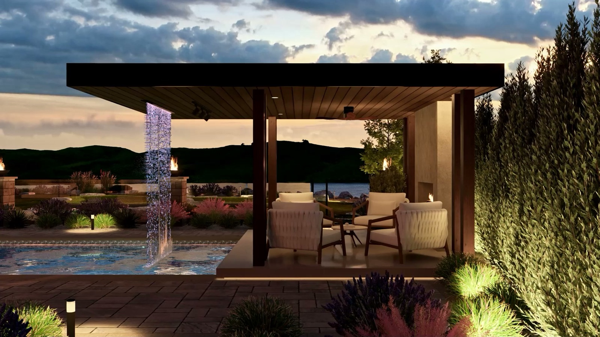

Call (250) 812 6112
Call (250) 812 6112
Call (250) 812 6112
Call (250) 812 6112

Your cheapest chance to move a wall is on the drawing. Moving it in your yard takes a machine, a crew and a bill. That is the whole case for seeing your yard in 2D and 3D before anyone digs, and it is why every project starts as a drawing.
Preview. You see the finished space before a machine turns up: the levels, the planting, the hardscape and the lighting, laid out together.
Price. The design is also your build quote. When it is done, you know what your yard costs to build, so you decide on facts instead of a feeling.
Plan. It is the drawing your crew builds from, and the crew who drew it is the crew who builds it. You are not stuck between a designer and a builder who never talk. Nothing gets lost in a handover.
The payoff comes on the day you stand on your finished patio: what you approved on screen is what got built in your yard.
A kick-off call before anything gets drawn, so your design fits how you live rather than a guess. Check-in calls while it is being drawn, so the first time you see it is not your only chance to change it. Two rounds of revisions, with more available if you want to keep pushing it.
On paper you get a hardscape plan: paved areas, walkways, stairs, decking and the levels that make them work on a slope. You get lighting design, planned with the yard. And you get furniture and décor direction, so the finished space looks the way it was drawn.
A 2D plan is your yard from above. It shows where everything goes, how big it is and how the levels step down. The full-yard 2D package covers the same ground as the 3D one, as detailed 2D plans. It is the cost-effective way to do the whole yard properly.
3D shows the space the way you will stand in it: from the back door, from the patio, at eye level. It catches what a flat plan hides, like a wall that feels taller than you pictured or seating that looks straight at the neighbour's garage.
If you read plans well and know what you want, 2D does the job. If a pool, big level changes or the full backyard is on the table, 3D is where you find problems while they are still cheap to fix. Either way, you pick the scope from seven packages, from a small space up to the full property.
The consult is free, with no obligation. The full design is a package you pay for, and it can feel like an extra line item. It is the line item that stops the expensive mistakes, and you hear what it involves before you commit.
If you want someone to turn up with a machine and work it out as they go, you are better off with someone else, and better to hear that now than three weeks in. If you want to see your yard, and know its cost, before anyone digs, that is how every job here starts. You also hear back the same working day, which matters, because what people around here say about getting a yard built is that they never get a call back.
Two rounds in every package, with more available if you want to keep pushing it.
Yes. Front yard is one of the seven packages, built around curb appeal.
Compare the packages: landscape design packages in 2D and 3D, Vernon BC.